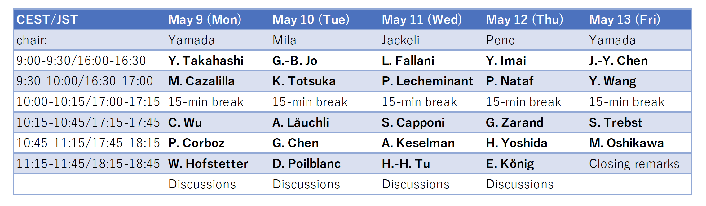

Program
Time table

Each slot has 25 minutes for a talk and 5 minutes for discussions.
May 9 (Mon)
Yoshiro Takahashi
Quantum Magnetism of Cold-Atom SU(N) Fermi-Hubbard Model
Miguel A. Cazalilla
Breaking SU(N) Symmetry in Alkaline-Earth-like Gases in and out of Equilibrium
Congjun Wu
Exploring SU(N) and Sp(N) symmetries in ultra-cold atomic systems
Philippe Corboz [
slides
]
Tensor network study of the SU(3) Hubbard model on the honeycomb lattice at 1/3 filling
May 10 (Tue)
Gyu-Boong Jo
Experimental study of nonidentical SU(N) fermions interacting identically
Keisuke Totsuka
The SU(N) Kondo lattice model -- ferromagnetism and supersymmetry
Andreas Läuchli
Unified phase diagram of antiferromagnetic SU(N) spin ladders
Gang Chen
Intertwining frustration and SU(N) symmetry in frustrated lattices
Didier Poilblanc
Simulating SU(N) chiral spin liquids on the square lattice with projected entangled-pair states
May 11 (Wed)
Leonardo Fallani
Strongly interacting SU(N) fermions with coherent spin manipulation: flavour-dependent Mott localization and universal Hall response
Philippe Lecheminant
One-dimensional Symmetry Protected Topological phases with an SU(N) symmetry
Sylvain Capponi
Unconventional phases for SU(4) model on the square lattice
Anna Keselman
Triangular lattice SU(4) antiferromagnets
Hong-Hao Tu
Collapsing Schrödinger’s cat: application of anyon eigenbasis in DMRG
May 12 (Thu)
Yoshinori Imai
New Kitaev spin liquid candidate materials: ruthenium trihalides RuX3 (X = Br, I) with honeycomb structure
Pierre Nataf
Numerical methods for Heisenberg SU(N) models
Gergely Zarand
Dynamics of ‘hadron' formation in repulsive non-equilibrium SU(n) Hubbard models
Hironobu Yoshida
Rigorous Results for Lattice Fermion Models with SU(N) Symmetry
Elio König
Quantum order in SU(N) impurity models
May 13 (Fri)
Ji-Yao Chen
Investigation of SU(N) spin liquids with symmetric PEPS
Yu Wang
Quantum Monte-Carlo simulations of SU(N) fermions in optical lattices
Simon Trebst
Moments and multiplets in moiré materials
Walter Hofstetter
Strong correlations and topology in three-flavor fermionic quantum gases
Masaki Oshikawa
Anomaly and Ingappability of SU(N) systems